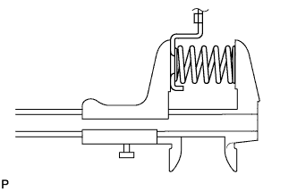

БЛОК АВТОМАТИЧЕСКОЙ ТРАНСМИССИИ > ПРОВЕРКА |
| 1. ПРОВЕРЬТЕ МАСЛЯНЫЙ ПОДДОН АВТОМАТИЧЕСКОЙ ТРАНСМИССИИ В СБОРЕ |
Снимите магниты и с их помощью соберите стальные частицы.
Внимательно осмотрите посторонние включения и частицы, имеющиеся в поддоне и на магнитах, чтобы определить, какому типу износа подвергается трансмиссия.
| 2. ПРОВЕРЬТЕ МУФТУ СВОБОДНОГО ХОДА ПОВЫШАЮЩЕЙ ПЕРЕДАЧИ |
 |
Удерживая барабан муфты прямой повышающей передачи, поверните первичный вал. Убедитесь, что первичный вал свободно вращается по часовой стрелке и блокируется при вращении против часовой стрелки.
 | Заблокировано |
 | Разблокировано |
| 3. ПРОВЕРЬТЕ ДИСК МУФТЫ ПРЯМОЙ ПОВЫШАЮЩЕЙ ПЕРЕДАЧИ |
Замените все диски при наличии какого-либо из следующих дефектов: 1) износа или подгорания диска, пластины или фланца; 2) отслоения или выцветания фрикционной накладки диска; 3) повреждения (даже небольшого) канавок или проштампованных номеров.
| 4. ПРОВЕРЬТЕ СТЯЖНУЮ ПРУЖИНУ МУФТЫ ПОВЫШАЮЩЕЙ ПЕРЕДАЧИ В СБОРЕ |
С помощью штангенциркуля измерьте длину пружины с седлом в свободном состоянии.
| 5. ПРОВЕРЬТЕ ПОРШЕНЬ МУФТЫ ПРЯМОЙ ПОВЫШАЮЩЕЙ ПЕРЕДАЧИ В СБОРЕ |
 |
Убедитесь, что запорный шарик перемещается свободно, встряхнув поршень.
Убедитесь, что клапан не имеет утечек, подав сжатый воздух под низким давлением.
Если результат не соответствует заданному, замените поршень муфты прямой повышающей передачи в сборе.
| 6. ПРОВЕРЬТЕ БАРАБАН МУФТЫ ПРЯМОЙ ПОВЫШАЮЩЕЙ ПЕРЕДАЧИ В СБОРЕ |
С помощью индикатора часового типа измерьте внутренний диаметр втулок барабана муфты.
| 7. ПРОВЕРЬТЕ ШЕСТЕРНЮ ПОВЫШАЮЩЕЙ ПЛАНЕТАРНОЙ ПЕРЕДАЧИ В СБОРЕ |
 |
С помощью индикатора часового типа измерьте внутренний диаметр втулки планетарной передачи.
С помощью комплекта плоских щупов измерьте осевой зазор ведущей шестерни планетарной передачи.
| 8. ПРОВЕРЬТЕ ДИСК ТОРМОЗА ПОВЫШАЮЩЕЙ ПЕРЕДАЧИ |
 |
Замените все диски при наличии какого-либо из следующих дефектов: 1) износа или подгорания диска, пластины или фланца; 2) отслоения или выцветания фрикционной накладки диска; 3) повреждения (даже небольшого) канавок или проштампованных номеров.
| 9. ПРОВЕРЬТЕ РАБОТУ ПОРШНЯ ТОРМОЗНОГО ЦИЛИНДРА ПОВЫШАЮЩЕЙ ПЕРЕДАЧИ |
Установите опору повышающей передачи в сборе на муфту прямой передачи в сборе.
Подайте сжатый воздух (392 кПа, (4 кгс/см2, 57 фунтов на кв. дюйм)) в канал для масла и убедитесь, что поршень тормозного цилиндра повышающей передачи перемещается свободно.
| 10. ПРОВЕРЬТЕ ВОЗВРАТНУЮ ПРУЖИНУ ТОРМОЗА ПОВЫШАЮЩЕЙ ПЕРЕДАЧИ В СБОРЕ |
С помощью штангенциркуля измерьте длину пружины с седлом в свободном состоянии.
| 11. ПРОВЕРЬТЕ ДИСК МУФТЫ ПРЯМОЙ ПЕРЕДАЧИ |
Замените все диски при наличии какого-либо из следующих дефектов: 1) износа или подгорания диска, пластины или фланца; 2) отслоения или выцветания фрикционной накладки диска; 3) повреждения (даже небольшого) канавок или проштампованных номеров.
| 12. ПРОВЕРЬТЕ СТЯЖНУЮ ПРУЖИНУ МУФТЫ ПРЯМОЙ ПЕРЕДАЧИ В СБОРЕ |
 |
С помощью штангенциркуля измерьте длину пружины с седлом в свободном состоянии.
| 13. ПРОВЕРЬТЕ ПОРШЕНЬ МУФТЫ ПРЯМОЙ ПЕРЕДАЧИ В СБОРЕ |
 |
Убедитесь, что запорный шарик перемещается свободно, встряхнув поршень.
Убедитесь, что клапан не имеет утечек, подав сжатый воздух под низким давлением.
| 14. ПРОВЕРЬТЕ БАРАБАН МУФТЫ ПРЯМОЙ ПЕРЕДАЧИ В СБОРЕ |
С помощью индикатора часового типа измерьте внутренний диаметр втулки барабана муфты.
| 15. ПРОВЕРЬТЕ ДИСК МУФТЫ ПЕРЕДНЕГО ХОДА |
 |
Замените все диски при наличии какого-либо из следующих дефектов: 1) износа или подгорания диска, пластины или фланца; 2) отслоения или выцветания фрикционной накладки диска; 3) повреждения (даже небольшого) канавок или проштампованных номеров.
| 16. ПРОВЕРЬТЕ ПОРШЕНЬ МУФТЫ ПЕРЕДНЕГО ХОДА В СБОРЕ |
|
Убедитесь, что запорный шарик перемещается свободно, встряхнув поршень.
Убедитесь, что клапан не имеет утечек, подав сжатый воздух под низким давлением.
| 17. ПРОВЕРЬТЕ ПЕРВИЧНЫЙ ВАЛ В СБОРЕ |
 |
С помощью индикатора часового типа измерьте внутренний диаметр втулки первичного вала.
| 18. ПРОВЕРЬТЕ СТЯЖНУЮ ПРУЖИНУ МУФТЫ ПЕРЕДНЕГО ХОДА В СБОРЕ |
|  |
С помощью штангенциркуля измерьте длину пружины с седлом в свободном состоянии.
| 19. ПРОВЕРЬТЕ ШТОК ПОРШНЯ ТОРМОЗНОГО ЦИЛИНДРА ОБЕСПЕЧЕНИЯ РЕЖИМА ТОРМОЖЕНИЯ ДВИГАТЕЛЕМ НА ВТОРОЙ ПЕРЕДАЧЕ |
Проверьте длину штока поршня.
| Метка-прорезь | Длина |
| В отсутствие | 78,3 - 78,5 мм (3,08 - 3,09 дюйма) |
| При наличии | 79,8 - 80,0 мм (3,14 - 3,15 дюйма) |
| 20. ПРОВЕРЬТЕ ЛЕНТУ ТОРМОЗА ОБЕСПЕЧЕНИЯ РЕЖИМА ТОРМОЖЕНИЯ ДВИГАТЕЛЕМ НА ВТОРОЙ ПЕРЕДАЧЕ В СБОРЕ |
 |
| *1 | Проштампованный номер |
| 21. ПРОВЕРЬТЕ КОРОННУЮ ШЕСТЕРНЮ ПЕРЕДНЕЙ ПЛАНЕТАРНОЙ ПЕРЕДАЧИ В СБОРЕ |
С помощью индикатора часового типа измерьте внутренний диаметр втулки коронной шестерни планетарной передачи.
| 22. ПРОВЕРЬТЕ ПЕРЕДНЮЮ ПЛАНЕТАРНУЮ ПЕРЕДАЧУ В СБОРЕ |
 |
С помощью комплекта плоских щупов измерьте осевой зазор ведущей шестерни.
| 23. ПРОВЕРЬТЕ МУФТУ СВОБОДНОГО ХОДА № 1 В СБОРЕ |
 |
Удерживая солнечную шестерню планетарной передачи, поверните муфту свободного хода в сборе. Убедитесь, что ступица муфты свободного хода свободно вращается по часовой стрелке и блокируется при вращении против часовой стрелки.
| Заблокировано |
| Разблокировано |
| 24. ПРОВЕРЬТЕ СОЛНЕЧНУЮ ШЕСТЕРНЮ ПЛАНЕТАРНОЙ ПЕРЕДАЧИ В СБОРЕ |
С помощью индикатора часового типа измерьте внутренний диаметр втулок солнечной шестерни планетарной передачи.
| 25. ПРОВЕРЬТЕ ПОРШЕНЬ ТОРМОЗНОГО ЦИЛИНДРА ВТОРОЙ ПЕРЕДАЧИ |
 |
Прерывисто подавая сжатый воздух под низким давлением в тормозной барабан второй передачи, убедитесь, что поршень тормозного цилиндра второй передачи перемещается плавно.
| 26. ПРОВЕРЬТЕ ТОРМОЗНОЙ ДИСК ВТОРОЙ ПЕРЕДАЧИ |
Замените все диски при наличии какого-либо из следующих дефектов: 1) износа или подгорания диска, пластины или фланца; 2) отслоения или выцветания фрикционной накладки диска; 3) повреждения (даже небольшого) канавок или проштампованных номеров.
| 27. ПРОВЕРЬТЕ СТЯЖНУЮ ПРУЖИНУ ПОРШНЯ ТОРМОЗНОГО ЦИЛИНДРА ВТОРОЙ ПЕРЕДАЧИ В СБОРЕ |
С помощью штангенциркуля измерьте длину пружины с седлом в свободном состоянии.
| 28. ПРОВЕРЬТЕ ТОРМОЗНОЙ ДИСК ПЕРВОЙ ПЕРЕДАЧИ И ПЕРЕДАЧИ ЗАДНЕГО ХОДА |
Замените все диски при наличии какого-либо из следующих дефектов: 1) износа или подгорания диска, пластины или фланца; 2) отслоения или выцветания фрикционной накладки диска; 3) повреждения (даже небольшого) канавок или проштампованных номеров.
| 29. ПРОВЕРЬТЕ МУФТУ СВОБОДНОГО ХОДА № 2 |
 |
Удерживая планетарную передачу, поверните внутреннее кольцо муфты свободного хода. Убедитесь, что внутреннее кольцо муфты свободного хода свободно вращается против часовой стрелки и блокируется при вращении по часовой стрелке.
| Заблокировано |
| Разблокировано |
| 30. ПРОВЕРЬТЕ ЗАДНЮЮ ПЛАНЕТАРНУЮ ПЕРЕДАЧУ В СБОРЕ |
 |
С помощью комплекта плоских щупов измерьте осевой зазор.
| 31. ПРОВЕРЬТЕ СТЯЖНУЮ ПРУЖИНУ ТОРМОЗА ПЕРВОЙ ПЕРЕДАЧИ И ПЕРЕДАЧИ ЗАДНЕГО ХОДА В СБОРЕ |
 |
С помощью штангенциркуля измерьте длину пружины с седлом в свободном состоянии.
| 32. ПРОВЕРЬТЕ ВТУЛКУ КАРТЕРА ТРАНСМИССИИ |
 |
С помощью нутромера измерьте внутренний диаметр задней втулки картера трансмиссии.
| 33. ПРОВЕРЬТЕ РАБОТУ ПОРШНЯ ТОРМОЗНОГО ЦИЛИНДРА ПЕРВОЙ ПЕРЕДАЧИ И ПЕРЕДАЧИ ЗАДНЕГО ХОДА |
 |
Убедитесь, что при подаче сжатого воздуха в картер трансмиссии поршни тормоза первой передачи и передачи заднего хода перемещаются плавно.
| 34. ПРОВЕРЬТЕ РАБОТУ ПОРШНЯ ТОРМОЗНОГО ЦИЛИНДРА ОБЕСПЕЧЕНИЯ РЕЖИМА ТОРМОЖЕНИЯ ДВИГАТЕЛЕМ НА ВТОРОЙ ПЕРЕДАЧЕ |
 |
Нанесите метку на шток поршня тормозного цилиндра обеспечения режима торможения двигателем на 2-й передаче.
| *1 | Метка |
| *2 | Шток поршня |
 |
С помощью SST измерьте ход, подавая сжатый воздух (392 кПа, (4,0 кгс/см2, 57 фунтов на кв. дюйм)) и прекращая его подачу.
| 35. ПРОВЕРЬТЕ ОСЕВОЙ ЛЮФТ ВЫХОДНОГО ВАЛА |
С помощью индикатора часового типа измерьте осевой люфт выходного вала, перемещая его рукой.
Убедитесь, что выходной вал вращается плавно.